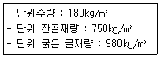
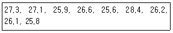
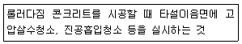
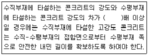
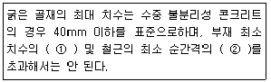
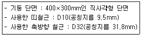
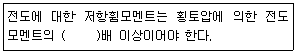

콘크리트산업기사 (2019-08-04 기출문제)
1과목: 콘크리트재료 및 배합
1. 분말도가 높은 시멘트를 사용하여 콘크리트를 제조하는 경우 발생되는 특성으로 옳지 않은 것은?
- 수화작용이 빠르다.
- 건조수축이 감소한다.
- 블리딩량이 감소한다.
- 초기강도가 증가한다.
(정답률: 67%)

2. 레디믹스트 콘크리트에 사용하는 혼합수에 대한 설명으로 틀린 것은?
- 상수돗물은 시험을 하지 않아도 사용할수 있다.
- 고강도 콘크리트에는 회수수를 사용해서는 안된다.
- 회수수의 품질기준으로 염소 이온(Cl-)량은 350mg/L 이하이어야 한다.
- 콘크리트의 회수수에서 상징수를 일부 활용하고 남은 슬러지를 포함한 물을 슬러지수라고 한다.
(정답률: 72%)
3. 콘크리트용 화학 혼화제 중 AE제의 성능 기중으로 블리딩양의 비는 몇 % 이하로 규정하고 있는가?
- 70% 이하
- 75% 이하
- 80% 이하
- 85% 이하
(정답률: 46%)
4. 일반 콘크리트용으로 사용되는 굵은 골재의 유해물 함유량 한도 최대값을 기준으로 다음 현장적용 사례 중 잘못된 경우는?
- 점토덩어리가 약 0.3% 함유되었으나 그대로 사용하였다.
- 연한 석편이 약 4.6% 섞여 있었으나 그대로 사용하였다.
- 0.08mm 체 통과량 시험을 실시한 결과 통과량이 0.8%여서 그래도 사용하였다.
- 외관이 중요한 구조물을 제작하기 위한 콘크리트용 굵은 골재에 석탄, 갈탄 등으로 밀도 0.002g/mm3의 액체애 뜨는 것이 0.4% 함유되었으나 그대로 사용하였다.
(정답률: 69%)
5. 시멘트풀의 응결에 대한 설명으로 틀린 것은?
- 분말도가 크면 응결은 빨라진다.
- 습도가 낮으면 응결은 빨라진다.
- 온도가 높을수록 응결은 지연된다.
- 물-시멘트비가 많을수록 응결은 지연된다.
(정답률: 84%)
6. 시방배합결과가 아래와 같을 때, 잔골재의 표면수율이 3%, 굵은 골재의 표면수율이 1%라면 이를 보정하여 현장배합으로 바꾼 단위 수량은? (단, 입도에 의한 보정은 무시한다.)

- 132.4kg/m3
- 140.8kg/m3
- 147.7kg/m3
- 162.3kg/m3
(정답률: 55%)
7. 조립률 2.4인 잔골재와 조립률 7.4인 굵은 골재를 1:1.5의 비율로 혼합할 때 혼합골재의 조립률은?
- 4.5
- 5.4
- 5.7
- 6.2
(정답률: 66%)
8. 잔골재의 안정성 시험에서 황산 나트륨을 사용할 경우 손실 질량 백분율은 몇 %이하이어야 하는가?
- 8%
- 10%
- 12%
- 15%
(정답률: 66%)
9. 일반 콘크리트의 배합에서 공기연행제, 공기연행감수제, 고성능 공기연행감수제를 사용한 콘크리트의 공기량에 대한 설명으로 옳은 것은?
- 잔골재를 실적률과 단위시멘트량을 고려하여 정하여야 한다.
- 굵은 골재의 입도와 단위수량을 고려하여 정하여야 한다.
- 잔골재의 조립률과 워커빌리티를 고려하여 정하여야 한다.
- 굵은 골재 최대 치수와 내동해성을 고려하여 정하여야 한다.
(정답률: 49%)
10. 고로 시멘트의 특성에 대한 설명으로 틀린 것은?
- 내열성이 크고 수밀성이 좋다.
- 건조수축은 약간 커지는 경향이 있다.
- 초기강도는 크나, 장기강도는 보통시멘트와 거의 비슷하거나 약간 작다.
- 내화학약품성이 좋으므로 해수, 공장폐수, 하수 등에 접하는 콘크리트에 적당하다.
(정답률: 71%)
11. 골재의 성질이 콘크리트에 미치는 영향에 대한 설명 중 틀린 것은?
- 콘크리트용 부순자갈 및 부순모래 시험결과 실적률이 큰 골재를 사용하면 콘크리트의 단위수량이 감소시킬 수 있다.
- 잔골재의 유기불순물 시험결과 표준용액과 비교하여 색이 짙어진 골재는 콘크리트의 응결 및 경화를 저해할 우려가 있다.
- 골재 중에 함유된 점토덩어리를 측정한 시험결과 점토덩어리량이 큰 골재는 콘크리트의 강도 및 내구성을 저하시킨다.
- 황산나트륨에 의한 골재 안정성시험결과 손실질량백분율이 작은 골재를 사용하면 콘크리트의 워커빌리티 및 내열성이 향상된다.
(정답률: 52%)
12. 압축강도의 시험횟수가 14회 이하이고, 콘크리트의 설계기준 압축강도(fck)가 24MPa인 콘크리트의 배합강도는?
- 28.9MPa
- 31.0MPa
- 32.5MPa
- 34.0MPa
(정답률: 67%)
13. 콘크리트 배합설계에 대한 일반적인 설명으로 옳은 것은?
- 콘크리트 품질변동은 공기량의 증감과는 관련이 없다.
- 일반적인 구조물에서 굵은골재의 최대치수는 40mm 이하로 한다.
- 잔골재율이 작으면 소요 워커빌리티를 얻기 위한 단위 수량이 감소한다.
- 콘크리트의 수밀성을 기준으로 물-결합 재비를 정할 경우 그 값은 45% 이하로 한다.
(정답률: 46%)
14. 단위 골재량의 절대용적이 0.80L, 단위 굵은 골재량의 절대용적이 0.55L일 경우 잔골재율은?
- 31.3%
- 34.2%
- 38.2%
- 41.8%
(정답률: 61%)
15. 골재의 체가름 시험으로부터 알 수 없는 골재의 성질은?
- 골재의 입도
- 골재의 실적률
- 골재의 조립률
- 굵은 골재의 최대치수
(정답률: 66%)
16. 콘크리트용 플라이 애시의 품질은 평가하기 위한 시험 항목으로 적합하지 않은 것은?
- 밀도
- 염기도
- 활동도 지수
- 비표면적(브레인 방법)
(정답률: 65%)
17. 콘크리트 배합에 대한 일반적인 설명으로 틀린 것은?
- 작업에 적합한 워커빌리티를 갖는 범위 내에서 단위수량은 될 수 있는 대로 적게 한다.
- 물-결합재비는 소요의 강도, 내구성, 수밀성 및 균열저항성 등을 고려하여 정하여 한다.
- 잘골재율은 소요의 워커빌리티를 얻을 수 있는 범위 내에서 단위수량이 최소가 되도록 시험에 의해 정하여야 한다.
- 콘크리트를 경제적으로 제조한다는 관점에서 될 수 있는 대로 굵은 골재의 최대 치수가 작은 것을 사용하는 것이 유리하다.
(정답률: 77%)
18. 기존 콘크리트 구조물의 철거로 인해 발생되는 폐콘크리트 등과 같이 이미 경화된 콘크리트를 파쇄하여 가공한 골재를 무엇이라 하는가?
- 순환골재
- 부순골재
- 고로 슬래그 골재
- 페로니켈 슬래그 골재
(정답률: 77%)
19. 터널 등의 숏크리트에 첨가하여 뿜어 붙인 콘크리트의 응결 및 조기의 강도를 증진시키기 위해 사용되는 혼화재료는?
- AE제
- 감수제
- 포졸란
- 급결제
(정답률: 76%)
20. 시멘트의 강도시험(KS L ISO 679)을 실시하기 위하여 공시체를 제작하고자 한다. 표준모래가 1350g이 소요되었다면, 필요한 물의 양은?
- 175g
- 200g
- 225g
- 250g
(정답률: 68%)
2과목: 콘크리트제조, 시험 및 품질관리
21. 구속되어 있지 않은 무근 콘크리트 부재의 건조수축률이 200×10-6일 때 콘크리트에 작용하는 응력의 종류와 크기는? (단, 콘크리트의 탄성계수는 25Pa이다.)
- 압축응력 5MPa
- 인장응력 5MPa
- 인장응력 2.5MPa
- 응력이 발생하지 않은
(정답률: 55%)
22. 일반콘크리트의 현장 품질관리에 관한 설명으로 옳지 않은 것은?
- 합리적이고 경계적인 검사계획을 정하여 공사 각 단계에서 필요한 검사를 실시하여야 한다.
- 시험 결과 불합격되는 경우에는 적절한 조치를 강구하여 소정의 성능을 만족하도록 하여야 한다.
- 일반적인 품질관리 시험을 실시하는 경우, 판정이 가능한 수법을 모두 사용하여 측정을 실시한다.
- 검사는 미리 정한 판단기준에 적합한 지의 여부를 필요한 측정이나 시험을 실시한 결과에 바탕을 두어 판정하는 것에 의해 실시한다.
(정답률: 65%)
23. 레디믹스트 콘크리트의 품질 중 슬럼프 플로에 따른 허용오차로서 옳은 것은?
- 슬럼프 플로 500mm인 경우 허용오차는 ±50mm이다.
- 슬럼프 플로 600mm인 경우 허용오차는 ±100mm이다.
- 슬럼프 플로 700mm인 경우 허용오차는 ±125mm이다.
- 슬럼프 플로 800mm인 경우 허용오차는 ±150mm이다.
(정답률: 60%)
24. 일반콘크리트에 대한 설명으로 옳지 않은 것은?
- 굳지 않은 콘크리트 중의 전 염소이온량은 원칙적으로 0.3kg/m3 이하로 한다.
- 보통콘크리트의 공기량은 4.5% 이하로 하되, 그 허용오차는 ±1.5%로 한다.
- 굵은 골재로서 사용할 자갈의 흡수율은 3.0% 이상의 값을 표준으로 한다.
- 내구성을 갖는 콘크리트는 원칙적으로 AE콘크리트로 하고, 물-시멘트비는 60%이하이어야 한다.
(정답률: 45%)
25. 굳지 않은 콘크리트의 성질에 관한 설명으로 옳지 않은 것은?
- 콘크리트의 온도가 높을수록 반죽 질기도 커지며, 공기량에 비례하여 슬럼프 값이 커진다.
- 단위 수량이 많을수록 반죽 질기는 커지고, 작업성은 용이해지나 재료분리를 일으키기 쉽다.
- 워커빌리티(Workability)는 작업의 난이도 및 재료분리에 저항하는 정도를 나타내며, 골재의 입도와 밀접한 관계가 있다.
- 피니셔빌리티(Finishability)란 굵은 골재의 최대 치수, 잔골재율, 골재입도, 반죽질기 등에 의한 마무리하기 쉬운 정도를 나타내는 성질이다.
(정답률: 53%)
26. 관입 저항침에 의한 콘크리트의 응결시간 측정 시 초결시간으로 정의하는 관입 저항값은?
- 2.5MPa
- 2.8MPa
- 3.0MPa
- 3.5MPa
(정답률: 66%)
27. 일반콘크리트의 비기에 대한 설명으로 틀린 것은?
- 비비기 시간은 시험에 의해 정하는 것은 원칙으로 한다.
- 비비기는 미리 정해 둔 비비기 시간의 3배 이상 계속해서는 안된다.
- 연속믹서를 사용할 경우, 비기기 시작 후 최초에 배출되는 콘크리트는 사용할 수 있다.
- 믹서 안의 콘크리트를 전부 꺼낸 후가 아니면 믹서 안에 다음 재료를 넣지 않아야 한다.
(정답률: 66%)
28. 콘크리트의 28일 압축 강도 시험 데이터가 다음 표와 같을 때 표준편차는? (단, 단위 : MPa)

- 0.2MPa
- 0.9MPa
- 1.8MPa
- 2.7MPa
(정답률: 54%)
29. 굳지 않은 콘크리트의 워커빌리티에 미치는 영향에 관한 내용으로 옳지 않은 것은?
- AE제나 감수제를 사용하면 워커빌리티가 개선된다.
- 일반적으로 혼합시멘트가 보통 포틀랜드 시멘트보다 워커빌리티에 유리하다.
- 일반적으로 부배합 콘크리트가 빈배합 콘크리트에 비해 워커빌리티가 좋다.
- 가능한 한 같은 크기의 입자로 이루어진 골재를 사용하면 워커빌리티에 유리하다.
(정답률: 57%)
30. 레디믹스트 콘크리트의 품질에 관한 사항으로 틀린 것은?
- 공기량의 허용오차는 ±1.5% 이하이다.
- 슬럼프 값이 80mm 이상인 경우 허용오차는 ±15mm 이상이다.
- 1회 강도시험 결과는 구입자가 지정한 호칭 강도 값의 85% 이상이어야 한다.
- 3회 강도시험 결과의 평균값은 구입자가 지정한 호칭 강도 값 이상이어야 한다.
(정답률: 60%)
31. 150mm×150mm×530mm인 공시체(지간 450mm)로 휨 강도 시험을 실시한 결과 중심선의 4점 사이에서 파괴되었으며 파괴 시 최대 하중이 35kN이었다면, 이 콘크리트의 휨 강도는?
- 3.48MPa
- 3.92MPa
- 4.14MPa
- 4.67MPa
(정답률: 50%)
32. 콘크리트의 압축 강도 시험방법에 대한 설명으로 틀린 것은?
- 공시체에 충격을 주지 않도록 똑같은 속도로 하중을 가한다.
- 하중을 가하는 속도는 압축 응력도의 증가율이 매초 (0.06×0.04)MPa이 되도록 한다.
- 공시체를 공시체 지름의 1% 이내의 오차에서 그 중심축이 가압판의 중심과 일치하도록 놓는다.
- 시험기의 가압판과 공시체의 끝 면의 직접 밀착시키고 그 사이에 쿠션재를 넣어서는 안 된다. 다만, 언본드 캐핑에 의한 경우는 제외한다.
(정답률: 58%)
33. 부착강도에 대한 설명으로 틀린 것은?
- 이형철근의 부착강도가 원형철근의 부착 강도보다 크다.
- 조건이 일정한 경우 콘크리트의 압축강도나 인장강도가 커질수록 부착강도는 감소한다.
- 부착강도는 철근의 종류 및 지름, 콘크리트 속에 묻힌 철금의 위치와 방향, 묻힌길이, 콘크리트의 피복두께 및 콘크리트 품질 등에 따라 달라진다.
- 철근을 콘크리트 속에 수평으로 매입하면 콘크리트 중의 입자의 침하나 블리딩에 의하여 철근 하부에 수막 및 공극이 생겨 부착강도가 저하한다.
(정답률: 64%)
34. 안지름 25cm, 안높이 28.5cm의 용기로 블리딩 시험을 한 결과 블리딩수가 78.5cm3이었다면 블리딩량은?
- 0.16cm3/cm2
- 0.20cm3/cm2
- 0.26cm3/cm2
- 0.30cm3/cm2
(정답률: 53%)
35. 일반적인 콘크리트 강도의 비파괴 시험 방법에 해당하지 않는 것은?
- 초음파법
- 음향방출법
- 반발 경도에 의한 방법
- 평판재하시험에 의한 방법
(정답률: 64%)
36. 굳지 않은 콘크리트의 공기량 시험방법의 종류가 아닌 것은?
- 압력법
- 용적법
- 증기법
- 질량법
(정답률: 57%)
37. 검사 로트의 1회 타설량이 300m3이고, 동일강도 및 동일재료로의 주문자가 없을 경우의 강도 시험 횟수는? (단, KS F 4009에서 규정하는 내용으로, 1회의 시험 결과는 3개 공시체 시험치의 평균값을 말한다.)
- 1회
- 2회
- 3회
- 4회
(정답률: 58%)
38. 결합재(binder)가 함유하고 있는 것이 아닌 것은?
- AE제
- 시멘트
- 실리카 퓸
- 플라이 애시
(정답률: 52%)
39. 콘크리트의 받아들이기 품질 검사에 관한 사항으로 옳지 않은 것은?
- 내구성 검사는 단위질량을 측정하는 것으로 한다.
- 강도검사는 콘크리트의 배합검사를 실시하는 것을 표준으로 한다.
- 콘크리트의 받아들이기 품질관리는 콘크리트를 타설하기 전에 실시하여야 한다.
- 워커빌리티의 검사는 굵은 골재 최대 치수 및 슬럼프가 설정치를 만족하는지의 여부를 확인함과 동시에 재료 분리 저항성을 외관 관찰에 의해 확인하여야 한다.
(정답률: 46%)
40. 콘크리트의 탄산화 측정에 사용되는 페놀프탈레인용액의 농도는?
- 1%
- 2%
- 3%
- 4%
(정답률: 68%)
3과목: 콘크리트의 시공
41. 수밀 콘크리트의 시공에 관한 설명으로 옳은 것은?
- 수밀 콘크리트는 시공이음이 필요하지 않다.
- 가능한 한 콘크리트를 연속타설 하지 않아야 한다.
- 수밀 콘크리트는 건조수축 균열이 발생하지 않는다.
- 수밀 콘크리트는 콜드조인트가 발생하지 않도록 하여야 한다.
(정답률: 63%)
42. 일반 콘크리트의 타설에 대한 설명으로 틀린 것은?
- 콘크리트의 타설은 원칙적으로 시공계획서에 따라야 한다.
- 한 구획 내의 콘크리트는 타설이 완료될 때까지 연속해서 타설하여야 한다.
- 타설한 콘크리트를 거푸집 안에서 횡방향으로 이동시켜서는 안 된다.
- 콘크리트를 2층 이상으로 나누어 타설할 경우, 상층의 콘크리트 타설은 원칙적으로 하층의 콘크리트가 굳은 후에 해야 한다.
(정답률: 69%)
43. 지하수위가 높은 조건에서 지하연속벽에 사용하는 수중 콘크리트를 타설 할 경우 물-결합재비(㉠)와 단위 시멘트량(㉡)의 표준은?
- ㉠:45%이하, ㉡:350kg/m3 이상
- ㉠:50%이하, ㉡:370kg/m3 이상
- ㉠:55%이하, ㉡:350kg/m3 이상
- ㉠:60%이하, ㉡:370kg/m3 이상
(정답률: 33%)
44. 물-시멘트비(W/C)가 55%이고, 단위수량이 165kg/m3일 때 단위 시멘트량은?
- 200kg/m3
- 250kg/m3
- 300kg/m3
- 350kg/m3
(정답률: 58%)
45. 한중 콘크리트의 보온양생 방법이 아닌 것은?
- 급열양생
- 기건양생
- 단열양생
- 피복양생
(정답률: 68%)
46. 숏크리트의 시공에 대한 설명으로 틀린 것은?
- 비탈면이 동결하였거나 빙설이 있는 경우 표면에 물을 뿌려 시공한다.
- 숏크리트는 빠르게 운반하고, 급결제를 첨가한 후는 바로 뿜어 붙이기 작업을 실시하여야 한다.
- 뿜어 붙인 콘크리트가 흘러내리지 않는 범위의 적당한 두께를 뿜어 붙이고 소정의 두께가 될 때까지 반복해서 뿜어 붙여야 한다.
- 절취면이 비교적 평활하고 넓은 벽면은 수축에 의한 균열 발생이 많으므로 세로 방향의 적당한 간격으로 신축이음을 설치하여야 한다.
(정답률: 73%)
47. 고강도 콘크리트에 대한 설명으로 틀린 것은?
- 경량골재 콘크리트에서 설계기준압축강도가 20MPa이상인 콘크리트를 말한다.
- 보통(중량)콘크리트에서 설계기준압축강도가 40MPa 이상인 콘크리트를 말한다.
- 고강도 콘크리트에 사용되는 굵은 골재의 최대 치수는 40mm 이하로서 가능한 25mm 이하로 한다.
- 기상의 변화가 심하거나 동결융해에 대한 대책이 필요한 경우를 제외하고는 공기연행제를 사용하지 않는 것을 원칙으로 한다.
(정답률: 66%)
48. 아래에서 설명하는 댐 콘크리트와 관련된 용어는?

- 팝아웃(pop-out)
- 스케일링(scaling)
- 그린컷(green cut)
- 콜드 조인트(cold joint)
(정답률: 61%)
49. 수평시공이음 중 역방향 타설 콘크리트의 이음방법으로 틀린 것은?
- 격자법
- 주입법
- 직접법
- 충전법
(정답률: 51%)
50. 고강도 콘크리트의 타설에 대한 아래 설명에서 ()안에 알맞은 수치는?

- 1.4
- 1.7
- 2.0
- 2.3
(정답률: 49%)
51. 특정한 입도(일반적으로 15mm)를 가진 굵은 골재를 거푸집에 채워 넣고 그 공극 속에 특수한 모르타르를 적당한 압력으로 주입하여 만든 콘크리트는?
- 수중 콘크리트
- 유동화 콘크리트
- 프리팩트 콘크리트
- 프리스트레스트 콘크리트
(정답률: 53%)
52. 콘크리트 타설 시 온도균열을 제어하기 위해 타설 온도를 낮게 유지하고 양생시 온도제어를 위해 관로식 냉각 등의 조치를 취할 수 있는 콘크리트는?
- 매스 콘크리트
- 수중 콘크리트
- 한중 콘크리트
- 해양 콘크리트
(정답률: 65%)
53. 수중 불분리성 콘크리트에 대한 아래 설면 중 ()안에 알맞은 것은?

- ①:1/5, ②:1/2
- ①:1/4, ②:1/2
- ①:1/4, ②:1/3
- ①:1/5, ②:1/3
(정답률: 47%)
54. 일반적인 경우 무근 콘크리트를 타설할 때의 슬럼프 표준값은?
- 50~100mm
- 50~150mm
- 60~120mm
- 80~150mm
(정답률: 40%)
55. 방사선 차폐용 콘크리트의 슬럼프는 작업에 알맞은 범위 내에서 가능한 한 작은 값이어야 한다. 일반적인 경우의 슬럼프 값의 기준은?
- 100mm이하
- 120mm이하
- 150mm이하
- 180mm이하
(정답률: 59%)
56. 유동화 콘크리트를 제조할 때 유동화제를 첨가하기 전의 기본 배합의 콘크리트를 나타내는 용어는?
- 고성능 콘크리트
- 고유동 콘크리트
- 베이스 콘크리트
- 유동화 콘크리트
(정답률: 65%)
57. 콘크리트의 시공이음에 대한 설명으로 틀린 것은?
- 시공이음은 될 수 있는 대로 전단력이 작은 위치에 설치한다.
- 신축이음은 양쪽의 구조물 혹은 부재가 구속되지 않는 구조이어야 한다.
- 시공이음은 부재의 압축력이 작용하는 방향과 평행하게 설치하는 것이 원칙이다.
- 바닥틀과 일체로 된 기둥이나 벽의 시공이음은 바닥틀과의 경계부근에 설치하는 것이 좋다.
(정답률: 63%)
58. 콘크리트의 양생에 관한 내용으로 틀린 것은?
- 재령 5일이 될 때까지는 해수에 씻기지 않도록 보호한다.
- 습윤 양생 시 거푸집판이 건조될 우려가 있는 경우에는 살수하여야 한다.
- 촉진 양생을 실시하는 경우에는 양생 시작 시기, 온도상승속도 등을 정하여야 한다.
- 일평균 기온이 15℃ 이상일 때 보통 포틀랜드 시멘트의 습윤 양생 기간의 표준은 3일이다.
(정답률: 62%)
59. 포장용 콘크리트의 배합기준 중 설계기준강도(f28)의 기준으로 옳은 것은?
- 설계기준 휨강도(f28)가 3.5MPa 이상
- 설계기준 휨강도(f28)가 4.5MPa 이상
- 설계기준 휨강도(f28)가 20MPa 이상
- 설계기준 휨강도(f28)가 30MPa 이상
(정답률: 58%)
60. 한중 및 서중콘크리트의 설명으로 틀린 것은?
- 하루의 평균기온이 25℃를 초과하는 경우 서중 콘크리트로 시공해야 한다.
- 하루의 평균기온이 4℃ 이하가 예상되는 기상조건일 때 한중 콘크리트로 시공해야 한다.
- 서중 콘크리트 배합 시 일반적으로 기온 10℃의 상승에 대하여 단위수량은 2~5% 증가시켜야 한다.
- 한중 콘크리트 시공방법은 0~4℃에서는 물과 골재를 65℃ 이상으로 가열하고 어느 정도 보온이 필요하다.
(정답률: 49%)
4과목: 콘크리트 구조 및 유지관리
61. 압축부재의 축방향 주철근의 최소 개수로 틀린 것은?
- 나선철근으로 둘러싸인 경우 6개
- 원형 띠철근으로 둘러싸인 경우 5개
- 사각형 띠철근으로 둘러싸인 경우 4개
- 삼각형 띠철근으로 둘러싸인 경우 3개
(정답률: 58%)
62. 표준갈고리를 갖는 인장 이형철근 D25(공칭직경 25.4mm)의 기본정착길이(lhb)는? (단, fck=24MPa, fy=400MPa이며, 보통 중량콘크리트 및 도막되지 않은 철근을 사용한다.)
- 약 498mm
- 약 582mm
- 약 674mm
- 약 845mm
(정답률: 44%)
63. 아래와 같은 조건으로 설계된 띠철근 기둥에서 띠철근의 수직간격으로 적합한 것은?

- 300mm
- 400mm
- 456mm
- 508mm
(정답률: 43%)
64. 콘크리트 구조물 진단을 위해 콘크리트의 강도를 평가하고자 할 때 적합한 시험방법이 아닌 것은?
- 인발법
- 분극저항법
- 코어 강도시험
- 슈미트해머에 의한 반발경도법
(정답률: 60%)
65. 콘크리트 타설 작업에서 표면 마감 전이나 마감 후에 급속히 건조가 이루어져 표면에 생긴 균열은?
- 침하균열
- 소성수축균열
- 온도응력균열
- 프리프변형균열
(정답률: 66%)
66. 전단철근으로 사용할 수 없는 것은?
- 스트럽과 굽힘철근의 조합
- 부재축에 직각으로 배치한 용접철망
- 주인장 철근에 30°의각도로 구부린 굽힘철근
- 주인장 철근에 30°의 각도로 설치되는 스터럽
(정답률: 58%)
67. 균열의 성장이 정지된 상태나 미세한 균열 시에 주로 적용되는 공법으로서, 손상된 부분을 보수재로 도포하여 처리하는 공법은?
- 단면보강공법
- 단면복구공법
- 전기방식공법
- 표면처리공법
(정답률: 54%)
68. 콘크리트 내의 철근은 외부로부터의 염화물 침투에 의해서 부식할 수 있다. 다음 중 철근의 부식에 미치는 영향이 가장 적은 것은?
- 습기와 산소의 양
- 콘크리트의 침투성
- 콘크리트의 설계기준강도
- 콘크리트에 침투하는 염화물의 양
(정답률: 74%)
69. 보 및 슬래브의 휨 보강방법으로 적합하지 않은 것은?
- 강판보강재 배치
- 경간길이의 증대
- 외부 긴장재 배치
- 콘크리트의 단면증대
(정답률: 51%)
70. 폭 300mm, 유효깊이 445mm인 단철근 직사각형 단면의 단순보에 인장철근 3-D32(As=2382mm2)가 배치되어 있다. 이 단면의 공칭휨강도(Mn)는? (단, fck=27MPa, fy=400MPa)
- 312kNㆍm
- 358kNㆍm
- 397kNㆍm
- 436kNㆍm
(정답률: 44%)
71. 강도설계법에 의한 콘크리트 구조 설계에 사용되는 강도감소계수(ø)에 대한 설명으로 틀린 것은?
- 인잔디배단면인 경우는 ø는 0.85를 적용한다.
- 전단력을 받는 부대인 경우는 ø는 0.75를 적용한다.
- 비틀림모멘트를 받는 부재인 경우 ø는 0.70을 적용한다.
- 무근콘크리트로서 휨모멘트를 받는 부재인 경우 ø는 0.55를 적용한다.
(정답률: 48%)
72. 현장에서 콘크리트 배합 시 원칙적으로 규정한 전체 염소이온량 총량의 허용차는?
- 0.3kg/m3 이하
- 0.6kg/m3 이하
- 0.9kg/m3 이하
- 1.2kg/m3 이하
(정답률: 75%)
73. 폭 400mm, 유효깊이 500mm인 직사각형 단면 보의 최소 휨철근량(As, min)은? (단, fck=21MPa, fy=400MPa)
- 570mm2
- 630mm2
- 700mm2
- 770mm2
(정답률: 45%)
74. 구조물의 내화성을 증대시키기 위한 대책으로 틀린 것은?
- 콘크리트 표면에 내화재료로 피복을 한다.
- 콘크리트 표면에 단열재료로 피복을 한다.
- 석영질 골재를 사용하여 콘크리트를 제작한다.
- 내화성능이 약한 강재는 보호하여 피복두께를 충분히 취한다.
(정답률: 59%)
75. 경간 10m인 단순보에 계수하중 36kN/m가 등분포하중으로 작용할 때 계수휨모멘트는?
- 350kNㆍm
- 400kNㆍm
- 450kNㆍm
- 500kNㆍm
(정답률: 49%)
76. 강도설계법의 특징에 관한 내용으로 틀린 것은?
- 강도감수 계수를 반영한 설계법이다.
- 허용응력 설계법이 가지는 문제점을 개선한 설계법이다.
- 서로 상이한 재료의 특성을 설계에 합리적으로 반영할 수 있다.
- 허용응력 설계법에 비하여 파괴에 대한 안전도의 확보가 확실하다.
(정답률: 63%)
77. 콘크리트의 탄산화 방지대책이 아닌 것은?
- 충분한 초기양생을 한다.
- 물-시멘트를 많게 한다.
- 콘크리트의 피복두께를 크게한다.
- 콘크리트를 충분히 다짐하여 타설하고 결함을 발생시키지 않도록 한다.
(정답률: 75%)
78. 옹벽의 안정조건에 대한 아래의 설명에서 ()안에 적합한 수치는?

- 1
- 1.5
- 2
- 2.5
(정답률: 62%)
79. 균열의 폭을 측정할 수 있는 방법이 아닌 것은?
- 균열스케일
- 균열게이지
- 균열현미경
- 와이어스트레인 게이지
(정답률: 65%)
80. 철근콘크리트 구조물에 사용하는 보수재료의 선정에 대한 설명으로 틀린 것은?
- 기존 콘크리트보다 큰 탄성계수를 갖는 재료를 선정하여야 한다.
- 기존 콘크리트와 가능한 한 열팽창계수가 비슷한 재료를 선정하여야 한다.
- 노출 철근을 보수하는 경우는 전도성을 갖는 재료로 수복하는 것이 바람직하다.
- 기존 콘크리트구조물과 확실하게 일체화 시키기 위해서는 경화 시나 경화 후에 수축을 일으키지 않는 재료가 필요하다.
(정답률: 50%)